Cómo configurar y usar el control de vueltas, el reporte de turno y el control de flota, y cómo se calcula cada cifra y cada gráfica.
Versión
Noviembre de 2026 · interfaz nueva (v2)
Módulos
Operaciones (pestañas En vivo, Vueltas, Operaciones y Turno) y Seguridad · Control de flota
Público
Supervisores de operación, jefes de flota y administradores de la cuenta
Capturas
Tomadas en el servidor de pruebas con la operación «Acarreo prueba» y datos reales de la flota
Contenido
Parte 1 · Operaciones
1. Qué es una operación y cómo se cuenta una vuelta
2. Antes de empezar: permisos, grupo y geocercas
3. Crear y editar una operación (cada campo y cada casilla)
4. Pestaña En vivo
5. Pestaña Vueltas: vueltas y tramos completos e incompletos
6. Paradas, justificación y motivos
7. Recalcular vueltas
8. Pestaña Turno: tarjetas, gráficas y tablas
9. Alerta y reportes de Operaciones
10. Cuándo se calcula cada cosa
11. Problemas frecuentes y cómo resolverlos
Parte 2 · Seguridad
12. Qué es y cómo se accede
13. Filtros y turnos
14. Tarjetas
15. Tablas y gráficas
16. Ajustes, recálculo y exportación
17. Avisos y comportamientos no obvios
Parte 1
Operaciones
Control de vueltas entre puntos de carga y descarga, paradas en ruta y reporte de turno.
1. Qué es una operación y cómo se cuenta una vuelta
Una operación es un trabajo repetitivo entre dos tipos de punto: carga y descarga (en una operación de tipo Ruta se llaman inicio de ruta y fin de ruta; las reglas son las mismas). Cada punto es una geocerca. El sistema sigue a cada vehículo del grupo de la operación y registra sus vueltas.
1.1 El ciclo
Momento
Qué registra el sistema
Sale de carga
Abre una vuelta nueva, guarda el tiempo que estuvo en carga y abre el tramo Ida (va cargado).
Llega a descarga
Cierra la Ida. Si el punto es de descarga, la Ida queda completa.
Sale de descarga
Guarda el tiempo en descarga y abre el tramo Vuelta (regresa vacío).
Llega a carga
Cierra el tramo Vuelta y cierra la vuelta. Si los dos tramos fueron completos, la vuelta es Completa.
1.2 Cuándo cuenta que el vehículo «llegó» o «salió»
Llegada: la primera posición dentro de la geocerca deja el punto como candidato. La llegada se confirma cuando otra posición, también dentro, llega al menos «Permanencia mínima» segundos después (por defecto 30). La hora registrada es la de la primera posición dentro. Si sale antes, se descarta (rebote en el borde).
Salida: igual, al revés. La primera posición fuera inicia la salida; si vuelve a entrar antes de la permanencia mínima, la salida se cancela.
Paso rozando: si entre dos posiciones seguidas, ambas fuera, el trayecto atraviesa una geocerca (en saltos de 40 m o más), se registra la entrada y la salida con hora calculada. Así no se pierde una visita rápida entre dos reportes del GPS.
Se ignoran las posiciones no válidas y las de menos de 4 satélites.
Hacen falta dos posiciones dentro de la geocerca para confirmar una visita, aunque la permanencia mínima sea 0. Un equipo que reporta cada 2 minutos y pasa 1 minuto por una geocerca pequeña puede no registrar la visita.
1.3 Tramo completo y tramo incompleto
Tramo
Completo cuando…
Incompleto cuando…
Ida (carga → descarga)
llega a cualquier punto de descarga.
vuelve a un punto de carga sin pasar por descarga, o se cierra por cualquiera de las causas de abajo.
Vuelta (descarga → carga)
llega a cualquier punto de carga.
vuelve a un punto de descarga, o se cierra por cualquiera de las causas de abajo.
Causas que cierran como incompleto el tramo y la vuelta abiertos:
Tramo vencido: el tramo dura más que el «Tramo máximo (horas)» (por defecto 6). Se corta en la hora límite.
El vehículo se quita del grupo de la operación.
La operación se desactiva o elimina.
Después de un cierre por estas causas, el vehículo queda en «Sin estado» hasta su próxima visita confirmada a un punto.
1.4 Vuelta completa, incompleta y en curso
Completa: tiene una Ida completa y una Vuelta completa.
Incompleta: le falta alguno de los dos tramos completos. Casos típicos: volvió a carga sin descargar; la vuelta empezó estando en descarga (el sistema empezó a contar con el vehículo ya en descarga) y no tiene Ida; un tramo venció por tiempo.
En curso: todavía abierta.
1.5 Varios puntos de carga y de descarga
No hace falta emparejar puntos. Una operación admite cualquier número de puntos de cada tipo (por ejemplo 3 cargas y 2 descargas). Cuenta solo el tipo: cualquier carga con cualquier descarga. Cada tramo guarda de qué punto salió y a cuál llegó.
Si dos puntos se solapan en el mapa, manda el punto donde el vehículo ya estaba. Si no estaba en ninguno, gana el primero de la lista que contenga la posición.
Lo que sí rompe las vueltas: que los vehículos carguen o descarguen en un sitio que no es punto de la operación. El sistema los ve salir de un punto y nunca llegar a otro, y a las 6 horas cierra la vuelta como incompleta. Ver el capítulo 11.
1.6 Número de vuelta, día y turno
El número de vuelta es correlativo por vehículo y por día de inicio de la vuelta (hora local), y cuenta también las incompletas.
El turno se asigna por la hora de inicio de la vuelta. Si no cae en ningún turno, se muestra «Fuera de turno». Cambiar los turnos después no reasigna las vueltas ya registradas, salvo que se recalculen.
2. Antes de empezar: permisos, grupo y geocercas
Permiso «Operaciones»: lo activa el administrador por usuario (Admin → Usuarios → Editar → Permisos). «Ver» permite consultar; «Editar» crear, modificar, justificar, recalcular y «Calcular ahora»; «Eliminar» borrar operaciones.
Grupo de vehículos: la operación sigue a los vehículos de un grupo. Si agregas o quitas un vehículo del grupo, la operación lo toma o lo suelta en menos de un minuto. Un grupo que usa una operación no se puede borrar.
Geocercas de los puntos: crea una geocerca por cada frente de carga y cada punto de descarga. La categoría (Carga, Descarga, Inicio de ruta, Fin de ruta) solo ordena las listas al elegir puntos; cualquier geocerca fija puede ser punto. Las geocercas asignadas a un vehículo (móviles) no pueden ser punto.
Geocercas de paradas autorizadas: grifos, talleres y zonas de descanso con su categoría (Grifo, Taller, Descanso). Una parada dentro de cualquiera de ellas no cuenta como no autorizada.
Sensores de cada vehículo (para el reporte de turno): ignición (ralentí y motor apagado), horas de motor (horómetro), odómetro (kilometraje) y nivel de combustible con sus umbrales de recarga y robo en la pestaña Precisión del vehículo (abastecimientos). Sin el sensor, esa columna queda vacía.
Una geocerca nueva no entra sola a la operación. Aunque tenga categoría Carga o Descarga, hay que editar la operación y agregarla con «+ Agregar punto». Mientras no esté agregada, las vueltas que pasan por ella no se cuentan bien.
Un vehículo solo puede estar en una operación activa a la vez. Si ya pertenece a otra operación activa, esta no lo toma; la columna «Vehículos» de la lista de operaciones muestra los realmente tomados.
3. Crear y editar una operación
Menú lateral → Operaciones → pestaña Operaciones. La lista muestra nombre y tipo, grupo, vehículos tomados, puntos, turnos y si está activa, con las acciones Editar, Activar/Desactivar y Eliminar. Arriba: Motivos de parada, Recalcular vueltas y ＋ Nueva operación.
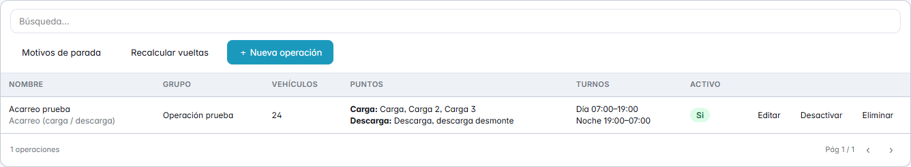
Pestaña Operaciones.
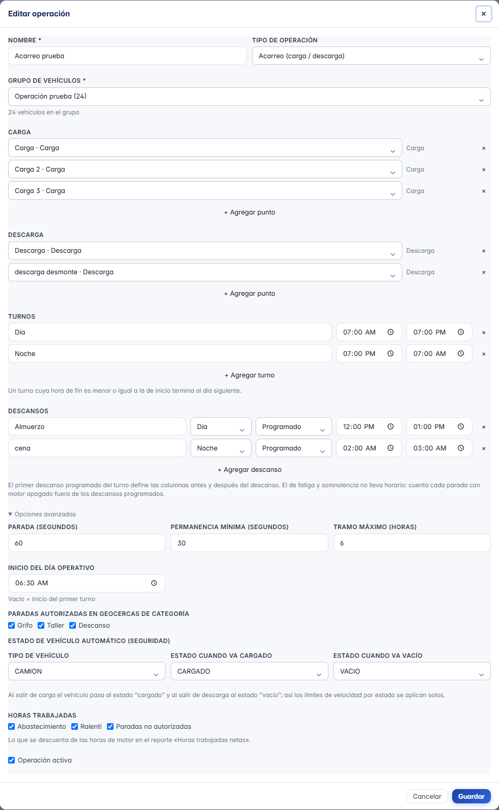
Modal «Editar operación» con las opciones avanzadas abiertas.
3.1 Datos principales
Campo
Qué hace
Nombre *
Obligatorio, hasta 255 caracteres.
Tipo de operación
«Acarreo (carga / descarga)» o «Ruta (inicio / fin)». Solo cambia los nombres de los puntos y de los estados; el conteo es igual.
Grupo de vehículos *
Grupo propio. Debajo indica cuántos vehículos tiene.
Carga / Descarga
Una o varias geocercas por bloque, con «+ Agregar punto» y × para quitar. Cada opción se muestra como «nombre · categoría». Debe haber al menos un punto de cada tipo.
Turnos
Nombre, inicio y fin. Un turno cuya hora de fin es menor o igual a la de inicio termina al día siguiente (Noche 19:00–07:00). No pueden solaparse. Son opcionales, pero sin turnos no hay reporte de turno.
Descansos
Nombre, turno al que pertenece, tipo y horario. Ver 3.2.
Horas trabajadas
Casillas Abastecimiento, Ralentí y Paradas no autorizadas: qué se descuenta de las horas de motor en el reporte 912 «Horas trabajadas netas». No afectan a nada más.
Operación activa
Desmarcada, la operación deja de evaluar posiciones, cierra como incompletos los tramos abiertos y libera los vehículos. Al reactivarla empiezan en «Sin estado».
3.2 Descansos
Programado (almuerzo, cena): con hora desde y hasta, dentro del horario de su turno. Dos programados del mismo turno no pueden solaparse. El primer descanso programado de cada turno define las columnas «Antes del descanso» y «Después del descanso» del reporte de turno, y se descuenta de las horas efectivas.
Fatiga y somnolencia: sin horario, uno por turno como máximo.
No se pueden agregar descansos si la operación no tiene turnos.
Hoy el descanso de fatiga y somnolencia se guarda pero todavía no interviene en ningún cálculo. Las paradas con motor apagado ya cuentan como STANDBY por sí mismas en el reporte de turno.
3.3 Opciones avanzadas
Campo
Por defecto
Qué hace
Parada (segundos)
60 (10 a 3600)
Tiempo detenido dentro de un tramo para que cuente como parada. También decide cuándo En vivo marca «Detenido».
Permanencia mínima (segundos)
30 (0 a 3600)
Tiempo para confirmar una llegada o una salida de un punto (1.2).
Tramo máximo (horas)
6 (1 a 48)
Un tramo más largo se cierra como incompleto.
Inicio del día operativo
vacío
Hora a la que empieza el día de 24 h del reporte de turno. Vacío = inicio del primer turno.
Paradas autorizadas en geocercas de categoría
Grifo, Taller, Descanso
Una parada dentro de cualquier geocerca tuya de esas categorías no cuenta como no autorizada.
Estado de vehículo automático (Seguridad)
sin tipo
Tipo de vehículo, estado cuando va cargado y estado cuando va vacío. Al salir de carga el vehículo pasa a «cargado» y al salir de descarga a «vacío», así los límites de velocidad por estado de las geocercas se aplican solos. Solo en vivo; un recálculo no cambia estados. Los dos estados deben ser del tipo elegido y distintos.
Si al guardar cambiaste los puntos, la pantalla ofrece recalcular las vueltas desde una fecha. Ver el capítulo 7.
4. Pestaña En vivo
Estado actual de cada vehículo de la operación. Se actualiza sola cada 20 segundos mientras la pestaña está abierta. Elige Operación y Fecha.
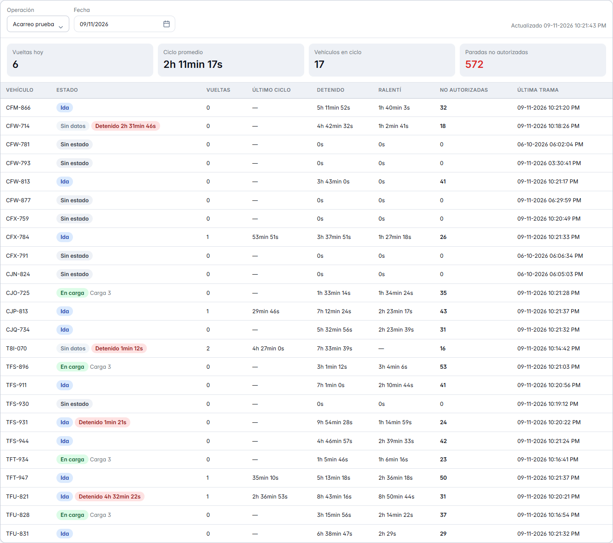
En vivo: tarjetas y estado por vehículo.
4.1 Tarjetas
Tarjeta
Cómo se calcula
Vueltas hoy
Vueltas completas que empezaron en la fecha elegida.
Ciclo promedio
Duración media de esas vueltas completas.
Vehículos en ciclo
Vehículos en un tramo o dentro de un punto en este momento.
Paradas no autorizadas
Suma de paradas no autorizadas de los tramos de las vueltas de la fecha.
4.2 Columnas y estados
Estado: «Sin estado» (aún no visitó ningún punto, o se cerró su vuelta por tiempo), «En carga» / «En descarga» (dentro, con la llegada confirmada, con el nombre del punto), «Ida», «Vuelta», y «Sin datos» (tiene un tramo abierto y no reporta hace más de 90 segundos). Si está detenido en un tramo más del umbral de parada, se añade «Detenido» con el tiempo: en rojo si está fuera de una zona autorizada, en gris si está dentro.
Vueltas y Último ciclo: vueltas completas del día y duración de la última.
Detenido y Ralentí: suma del día más la parada en curso. Ralentí necesita sensor de ignición; sin él se ve «—».
No autorizadas y Última trama.
Al hacer clic en una fila se abre la pestaña Vueltas filtrada por ese vehículo y esa fecha.
5. Pestaña Vueltas: vueltas y tramos completos e incompletos
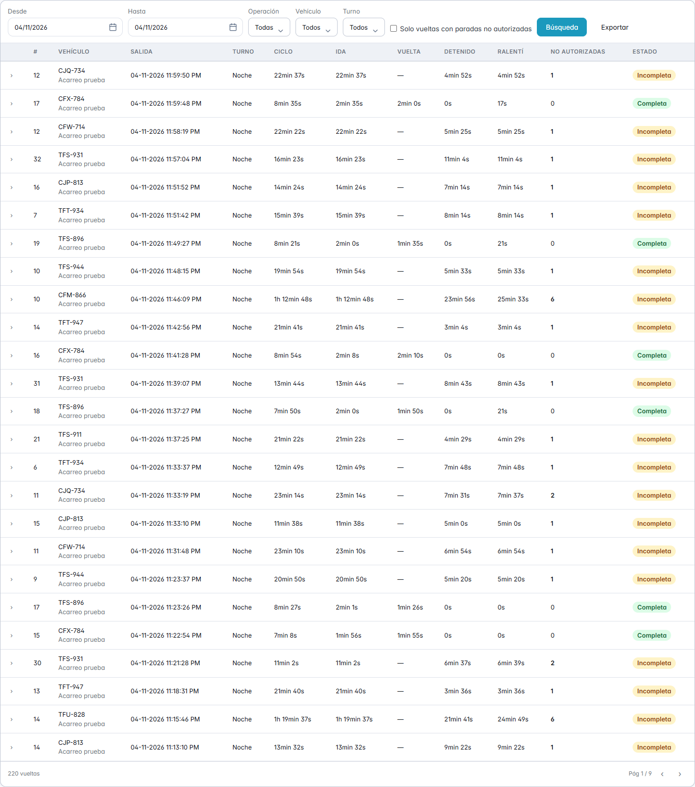
Vueltas del 4 de noviembre: filtros, una fila por vuelta y su estado.
5.1 Filtros
Desde / Hasta: por el día de inicio de la vuelta.
Operación, Vehículo y Turno (el turno aparece al elegir operación; incluye «Fuera de turno»).
Solo vueltas con paradas no autorizadas.
Pulsa Búsqueda. La lista trae 25 vueltas por página; si hay recálculos en curso, avisa que las vueltas pueden cambiar.
5.2 Columnas
Número de vuelta, vehículo, salida, turno, Ciclo (duración total), Ida, Vuelta, Detenido, Ralentí, No autorizadas y Estado: «Completa», «Incompleta» o «En curso», más «Pendiente de cálculo» si las paradas de algún tramo aún no se calcularon (se calculan en el minuto siguiente al cierre del tramo).
5.3 Cómo ver si una vuelta y sus tramos están completos
La columna Estado de cada fila dice si la vuelta es Completa, Incompleta o En curso.
Pulsa la flecha › de la fila para abrir el detalle. Cada tramo muestra «origen → destino». Así se identifica el tramo incompleto:
Ida completa: sale de carga y llega a descarga (por ejemplo «Carga 3 → Descarga»).
Vuelta completa: sale de descarga y llega a carga («Descarga → Carga 3»).
Tramo incompleto: llega al mismo tipo de punto («Carga 2 → Carga 2»), no tiene destino («→ ?»), o dura exactamente el tramo máximo (6 h, cerrado por tiempo).
Cada tramo muestra además inicio, fin, duración, distancia, tiempo sin datos y Ver tramo en mapa, que abre el Historial de ese vehículo con el rango exacto del tramo. Debajo, sus paradas.
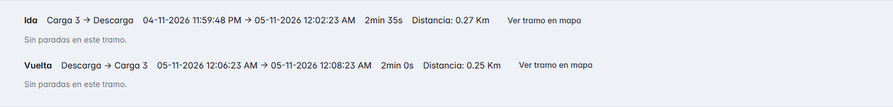
Vuelta completa: Ida «Carga 3 → Descarga» y Vuelta «Descarga → Carga 3», sin paradas.
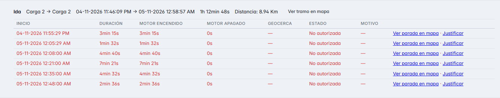
Vuelta incompleta: la Ida sale de Carga 2 y vuelve a Carga 2 tras 9 km y seis paradas no autorizadas. El camión descargó en un sitio que no es punto de la operación.
Hoy la lista no tiene filtro por estado (Completa / Incompleta) y el detalle no rotula cada tramo como completo o incompleto: se deduce por «origen → destino» como en el paso 2. Para revisar solo vueltas con problemas en ruta, usa la casilla «Solo vueltas con paradas no autorizadas» o el reporte 910.
5.4 Exportar
El botón Exportar (visible con permiso de reportes) genera el reporte 910 «Control de vueltas» con las fechas, la operación, el vehículo y la casilla de no autorizadas. El filtro de turno no se envía al reporte.
6. Paradas, justificación y motivos
6.1 Cómo se calculan las paradas
Solo hay paradas dentro de un tramo; el tiempo dentro de un punto de carga o descarga no es parada.
Una parada es estar por debajo de la velocidad mínima de movimiento del vehículo al menos «Parada (segundos)». Los huecos de más de 90 segundos sin posiciones se descuentan como «Sin datos»; si sin ellos la parada no llega al umbral, se descarta.
Se calculan una vez cerrado el tramo, en el minuto siguiente («Pendiente de cálculo» mientras tanto).
Estado
Cuándo
Autorizada
Cae en cualquier geocerca tuya de las categorías autorizadas de la operación (por defecto Grifo, Taller, Descanso). Se muestra el nombre de la geocerca.
Dato dudoso
La posición final de la parada trae un salto de posición (posible GPS congelado). No cuenta como no autorizada.
No autorizada
El resto. Es la única que suma en «No autorizadas».
Motor encendido y motor apagado de cada parada necesitan sensor de ignición; sin él se ve «—».
6.2 Justificar una parada
En el detalle de la vuelta, en la fila de la parada, pulsa Justificar (requiere permiso de edición).
Elige el Motivo del catálogo o «Otro (escribir motivo)»; con «Otro» el comentario es obligatorio.
Marca «Autorizar esta parada» si no debe contar como no autorizada. El motivo solo explica; la casilla es lo que autoriza.
Guarda. Queda registrado quién la justificó y cuándo, y se recuenta «No autorizadas» del tramo.
Si justificas una parada que ya estaba autorizada por geocerca y no marcas la casilla, pasa a contar como no autorizada. Marca la casilla siempre que la parada sea válida.
6.3 Catálogo de motivos
Pestaña Operaciones → Motivos de parada. Cada motivo tiene nombre y «Cuenta como»:
Mantenimiento: la duración de las paradas justificadas con ese motivo suma al estado MAINT del reporte de turno (se refleja cuando el turno se vuelve a calcular).
Descanso: se guarda; hoy no cambia ningún cálculo.
—: solo explica.
La cuenta trae por defecto: Tráfico o vía bloqueada, Espera en cola, Falla mecánica, Neumático, Indicación de supervisión o seguridad, Alimentación, Clima, Fatiga y somnolencia (Descanso) y Mantenimiento (Mantenimiento). Al eliminar un motivo, las paradas ya justificadas conservan su comentario y se muestran como «Otro».
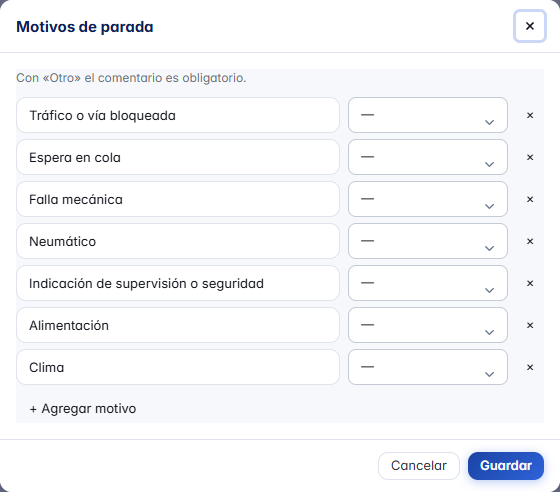
Catálogo de motivos con el selector «Cuenta como».
7. Recalcular vueltas
Rehace las vueltas del pasado con la configuración actual. Úsalo después de agregar o quitar puntos, mover una geocerca, cambiar umbrales o turnos, o al crear una operación cuando los vehículos ya llevaban días trabajando.
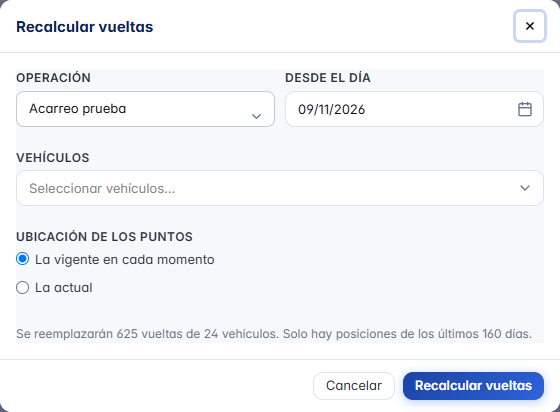
Recalcular vueltas: operación, desde el día, vehículos y ubicación de los puntos.
Campo
Qué hace
Operación
La operación a recalcular.
Desde el día
Se rehace desde las 00:00 de ese día hasta hoy.
Vehículos
Vacío = todos los del grupo. Se ignoran los que no son del grupo.
Ubicación de los puntos
La vigente en cada momento (por defecto): usa la forma que tenía cada geocerca en cada fecha; un punto agregado hoy vale también para el pasado, uno quitado deja de valer desde que se quitó. La actual: usa los puntos de hoy con su forma de hoy para todo el rango; conviene cuando una geocerca estaba mal dibujada y la corrección debe aplicar hacia atrás.
El aviso indica cuántas vueltas se reemplazarán y hasta cuántos días atrás hay posiciones guardadas.
El recálculo se encola y lo ejecuta el servidor en el minuto siguiente (hasta 5 vehículos por minuto). Mientras tanto, Vueltas avisa que hay recálculos pendientes.
Rehace vueltas, tramos, paradas y los resúmenes del reporte de turno desde esa fecha. No cambia el estado de vehículo de Seguridad.
Se pierden las justificaciones de las paradas de las vueltas reemplazadas. Recalcula primero y justifica después.
7.1 Al mover, renombrar o borrar una geocerca que es punto
Cambiar la forma de la geocerca crea una nueva versión del punto desde ese momento; las vueltas anteriores conservan la forma vieja salvo que recalcules con «La actual».
Renombrar sin mover la forma no actualiza el nombre que muestra el punto.
Una geocerca que es punto vigente no se puede borrar; primero quítala de la operación.
8. Pestaña Turno: tarjetas, gráficas y tablas
Resumen de un día operativo por turno, en una sola vista: tarjetas, cinco gráficas por hora, estados por equipo y tres tablas. Es de consulta: no se actualiza sola; pulsa Refrescar.
Filtros: operación, fecha con flechas, turno, Refrescar, Pantalla completa (Esc para salir) y Exportar Excel.
8.1 Cuándo hay datos
Cada turno se calcula solo entre 10 y 70 minutos después de su hora de fin. Mientras el turno está en curso, sus horas no tienen datos: no significa que no haya movimiento.
Calcular ahora aparece cuando el día no tiene ningún dato calculado (con permiso de edición). Calcula los turnos del día que ya empezaron; uno en curso queda calculado parcialmente hasta ese instante. No se puede calcular un día futuro.
Un recálculo de vueltas también rehace estos resúmenes.
Si el servidor estuvo detenido más de 70 minutos tras el fin de un turno, ese turno no se calcula solo: usa Calcular ahora.
8.2 Día operativo y eje de horas
Un turno pertenece al día D si empieza a la hora de «Inicio del día operativo» o después; el turno Noche del día 8 cuenta para el día 8 aunque termine el 9.
El eje de 24 horas empieza en la hora en punto del primer turno (con turnos 07:00 y 19:00 va de 07 a 06).
Las horas que no pertenecen al turno elegido no se dibujan.
8.3 Qué cuenta como «en movimiento»
Todas las cifras por hora parten de recorrer las posiciones de cada vehículo una por una y clasificar el tiempo entre cada posición y la anterior:
Estado
Cuándo
READY
En movimiento: velocidad igual o mayor a la velocidad mínima de movimiento del vehículo (configurada en el vehículo; 6 km/h si no tiene).
DELAY
Ralentí: parado con motor encendido.
STANDBY
Parado con motor apagado. Sin sensor de ignición, parado cuenta como apagado.
MAINT
Tiempo dentro de geocercas de categoría Taller más paradas justificadas con un motivo «Mantenimiento». Se descuenta primero de STANDBY y luego de DELAY.
Sin datos
Huecos de más de 90 segundos entre posiciones. Excepción: si el vehículo estaba quieto (no se movió más de 100 m) y el hueco dura 1 hora o menos, se trata como parado, porque los equipos detenidos reportan cada pocos minutos.
Fuera de operación
El resto hasta completar las 24 horas.
El tiempo de la primera posición del turno no se cuenta (solo su velocidad). Si un intervalo cruza el cambio de hora, se reparte entre las dos horas. Cargado y vacío salen del tramo abierto en cada posición: en la Ida va cargado y en la Vuelta vacío; fuera de un tramo no suma a ninguno.
8.4 Tarjetas
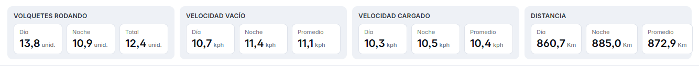
Tarjetas del 8 de noviembre.
«Día» es el primer turno de la operación y «Noche» el segundo.
Tarjeta
Cómo se calcula
Volquetes rodando
Para cada hora del turno, cuántos vehículos tuvieron al menos un segundo en movimiento; la tarjeta es el promedio de esas horas. Total = promedio de todas las horas del día.
Velocidad vacío / cargado
Distancia recorrida en tramos de Vuelta (vacío) o de Ida (cargado) dividida entre el tiempo en movimiento en ellos. Promedio = el mismo cálculo con los dos turnos juntos.
Distancia
Kilómetros totales del turno de todos los vehículos (distancia GPS). Promedio = media de Día y Noche.
8.5 Gráficas por hora
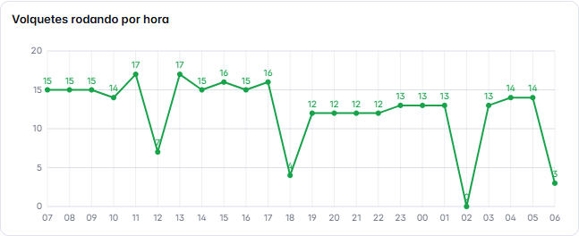
Volquetes rodando por hora.
Volquetes rodando por hora: número de vehículos con algún segundo en movimiento en esa hora. Un vehículo que se movió 30 segundos cuenta igual que uno que rodó la hora completa. Un 0 en una hora del turno es que nadie se movió; una hora sin punto es que aún no se calculó o no pertenece al turno elegido.
Velocidad promedio vacío por hora y cargado por hora: distancia entre tiempo en movimiento de toda la flota, por sentido, en esa hora. Sin punto si nadie circuló en ese sentido.
Velocidad promedio cargado y vacío por hora: las dos series juntas.
Velocidad de la flota por hora:máxima y mínima de las posiciones en movimiento (la mínima nunca es 0) y media ponderada por el tiempo en movimiento. El cuadro al pasar el ratón dice qué unidad y a qué hora exacta; un clic en un punto de máxima o mínima abre el Historial de esa unidad 5 minutos antes y después.
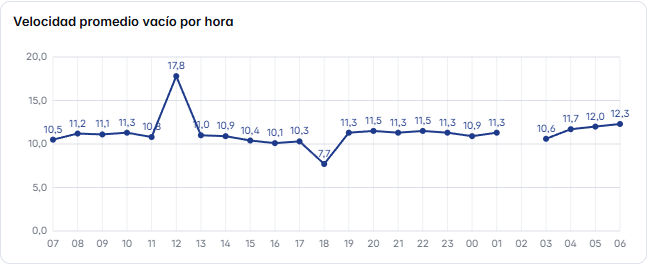
Velocidad promedio vacío por hora.
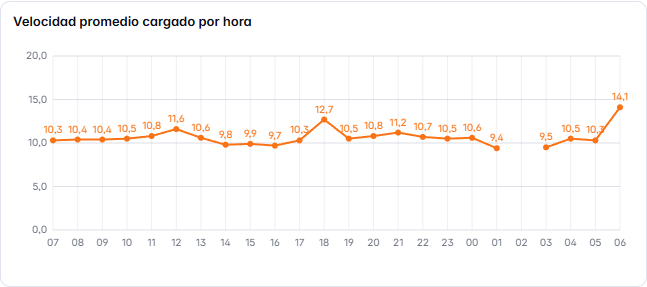
Velocidad promedio cargado por hora.
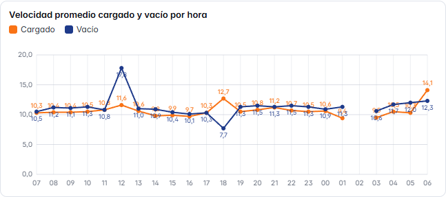
Cargado y vacío en la misma gráfica.
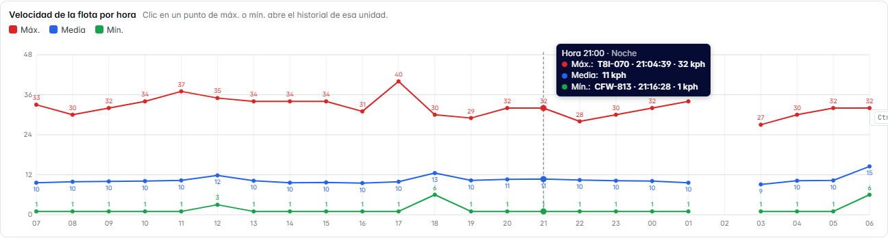
Velocidad de la flota: a las 21:00 la máxima fue T8I-070 a 32 km/h a las 21:04:39.
8.6 Estados por equipo
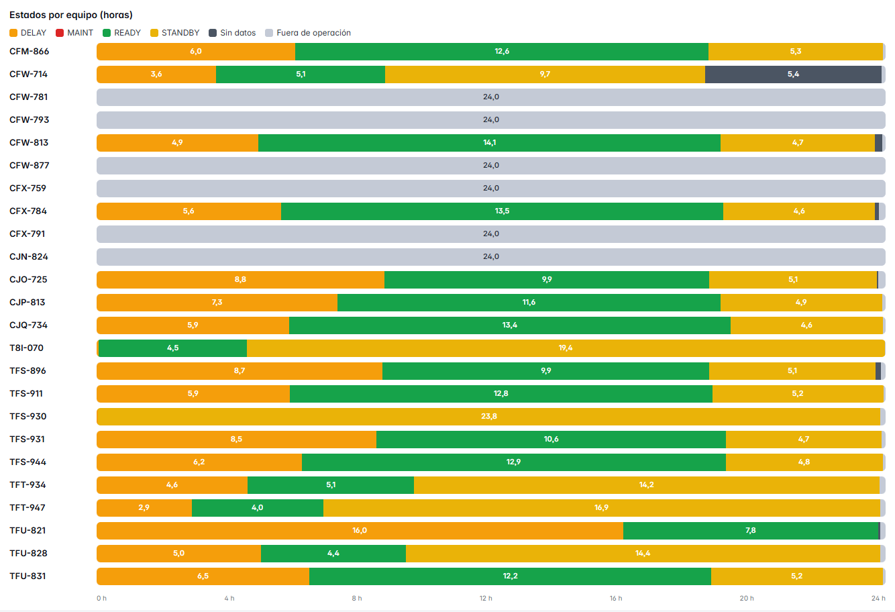
Una barra de 24 horas por vehículo con las horas de cada estado.
Cada barra suma 24 horas del día operativo aunque se elija un solo turno. Los descansos programados no se descuentan de los estados: el tiempo parado en el almuerzo aparece como DELAY o STANDBY según el motor.
8.7 Tablas
Tabla
Contenido
Horas y horómetro
Hora inicial / final: primer y último movimiento del vehículo en el turno. Antes / Después del descanso: horario programado del primer descanso. Horas efectivas = final − inicial − la parte del descanso que cae entre ambas. Ralentí = DELAY. Horómetro inicial, antes, después, final y VAR, leídos del sensor de horas de motor; sin sensor, «—».
Kilometraje
Odómetro inicial, final y VAR del sensor de odómetro (también el virtual); sin sensor, «—».
Abastecimientos
Solo con sensor de nivel de combustible. Una fila por cada subida de nivel que supera el umbral de recarga del vehículo: inicio, fin, duración, % al llegar, % al salir, recarga en puntos y si fue con motor apagado. Sirve para cisterna en campo.
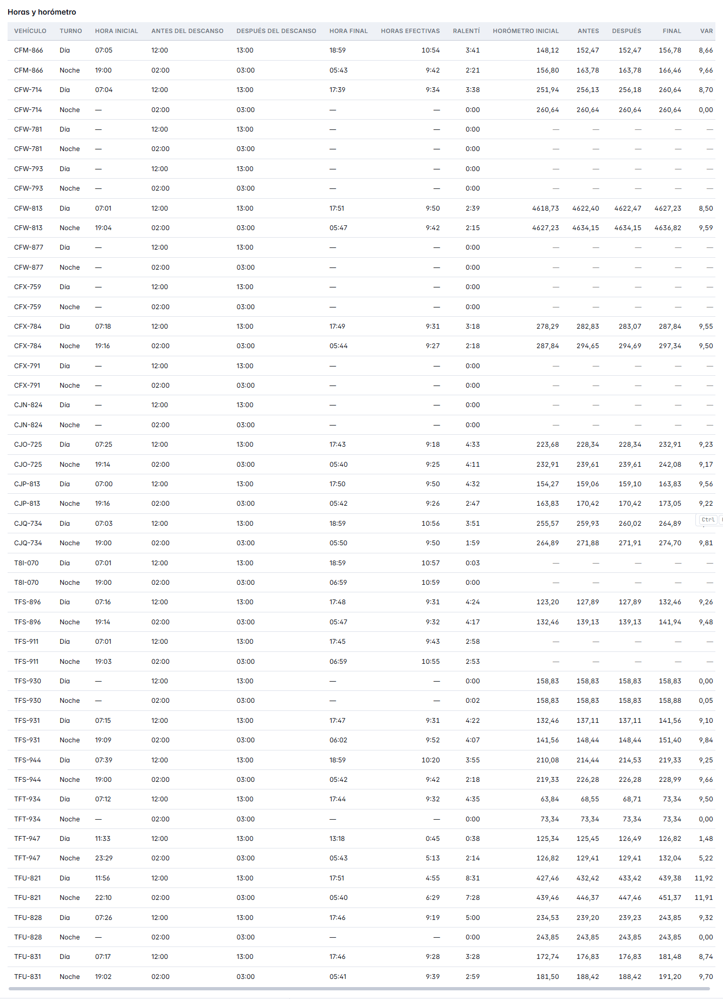
Horas y horómetro por vehículo y turno.
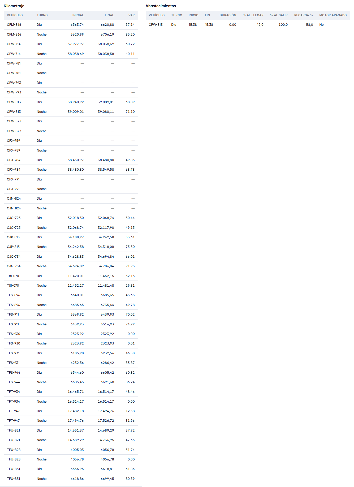
Kilometraje y abastecimientos detectados.
8.8 Exportar Excel
Descarga turno_<operación>_<fecha>.xlsx. La hoja Reporte tiene el formato del cliente (turno, horómetro, kilometraje, abastecimiento y horas con fórmulas VAR, bloque Distancia) y seis gráficos de Excel editables. La hoja Datos tiene las series de cada gráfica, las tarjetas y, en la de flota, la unidad y hora de cada máxima y mínima.
9. Alerta y reportes de Operaciones
9.1 Alerta «Parada en operación»
Menú → Alertas → Nueva alerta → Disparador Parada en operación, con «Parada mayor a (segundos)» (por defecto 60). Dispara cuando un vehículo con un tramo abierto en una operación activa lleva detenido al menos ese tiempo fuera de las geocercas autorizadas. El evento indica la operación, el sentido y el número de vuelta.
9.2 Reportes
ID
Reporte
Qué muestra
910
Control de vueltas
Una fila por vuelta con salidas y llegadas, tiempos en carga y descarga, ida, vuelta, ciclo, detenido, ralentí, motor apagado, no autorizadas y estado. Totales por día calendario o por turno. Opción «solo vueltas con paradas no autorizadas».
911
Paradas en operación
Una fila por parada con vuelta, tramo, ubicación, motor, estado, motivo y quién justificó.
912
Horas trabajadas netas
Por vehículo y día: horas de motor menos los descuentos marcados en la operación (tiempo en grifo, ralentí, paradas no autorizadas) y consumo por hora si hay sensor de combustible.
913
Abastecimiento
Visitas a geocercas de categoría Grifo con entrada, salida y duración. Para cisterna en campo, usa la tabla de Abastecimientos de la pestaña Turno.
10. Cuándo se calcula cada cosa
Qué
Cuándo
Estado en vivo, visitas, tramos y vueltas
Con cada posición que llega, en tiempo real.
Paradas de un tramo
En el minuto siguiente a que el tramo se cierre.
«Sin datos» y tramos vencidos
Cada minuto.
Recálculos pedidos
Cada minuto, hasta 5 vehículos por pasada.
Reporte de turno
Entre 10 y 70 minutos después del fin de cada turno, o con «Calcular ahora».
Limpieza de datos antiguos
Cada noche a la 01:00, con los «Días para guardar» de la limpieza automática del historial (Admin → Herramientas).
11. Problemas frecuentes y cómo resolverlos
Síntoma
Causa probable y solución
Muchas vueltas incompletas con tramos «Carga X → Carga X» o «Descarga → ?»
Los vehículos cargan o descargan en un sitio que no es punto de la operación. Revisa en el Historial dónde paran (enlace «Ver tramo en mapa»), crea la geocerca, agrégala a la operación y recalcula desde la fecha en que empezó.
Tramos que duran exactamente 6 h
Cerrados por «Tramo máximo». Mismo origen que el anterior, o el vehículo se fue a taller sin una geocerca Taller.
Vueltas incompletas muy cortas (1 a 15 min) «Descarga → Descarga»
El vehículo sale al borde de la geocerca y vuelve a entrar. Agranda un poco la geocerca o sube la «Permanencia mínima».
Muchos vehículos «Sin estado» en En vivo
No han tocado ningún punto confirmado: trabajan en frentes que no son puntos, o la geocerca es tan pequeña que no caen dos posiciones dentro.
La pestaña Turno sale en 0 desde cierta hora
El turno aún no termina o no se ha cerrado. Espera 10 minutos tras el fin o pulsa Calcular ahora.
Horómetro, kilometraje o abastecimientos vacíos
El vehículo no tiene el sensor correspondiente configurado.
Un vehículo del grupo no aparece
Ya pertenece a otra operación activa.
Parte 2
Seguridad · Control de flota
Excesos de velocidad, cinturón, salidas de geocerca, uso y estado de la flota por día y por turno.
12. Qué es y cómo se accede
Menú lateral → Seguridad. Requiere el permiso «Seguridad» que el administrador activa por usuario: «Ver» permite consultar y exportar; «Editar» cambiar ajustes y recalcular.
Los datos se calculan por vehículo, día y turno y se guardan; la pantalla los suma según los filtros. El cálculo automático corre cada hora a y 20 (ayer y hoy; hoy queda parcial hasta el día siguiente).
El cálculo automático solo incluye a los usuarios que ya abrieron la página de Seguridad alguna vez. Un usuario nuevo debe entrar una vez y, si quiere el pasado, pulsar Recalcular.
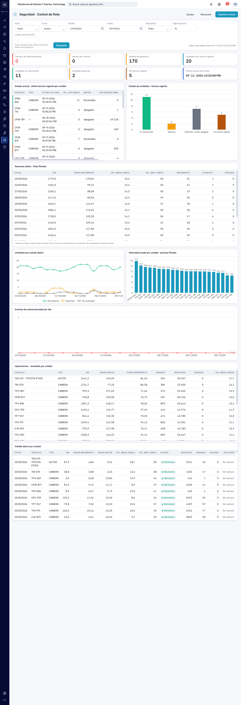
Seguridad del 25 de octubre al 9 de noviembre.
13. Filtros y turnos
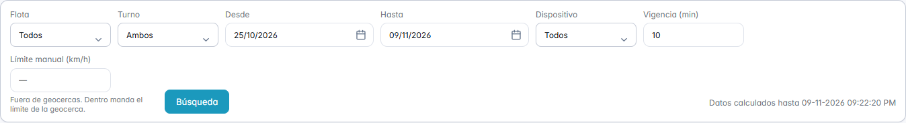
Barra de filtros.
Filtro
Efecto
Flota
Todos o un tipo de vehículo. Usa el tipo que tú asignaste a cada vehículo; los que no tienen tipo desaparecen al elegir una flota.
Turno
Ambos, Día o Noche.
Desde / Hasta
Días de trabajo. Por defecto los últimos 15 días.
Dispositivo
Todos o una unidad.
Búsqueda
Aplica los filtros. Cambiar un desplegable no recarga nada hasta pulsarla.
Vigencia (min) y Límite manual (km/h) están en la barra pero no son filtros: son ajustes que se guardan al cambiarlos y requieren permiso de edición. Ver el capítulo 16.
13.1 Turno Día y Noche
Día: de «Inicio turno día» a «Fin turno día» (por defecto 07:00 a 19:00).
Noche: del fin del turno día hasta el inicio del día siguiente, y se atribuye al día en que empieza.
Cada cifra se calcula con las posiciones y eventos dentro del rango de su turno. Un turno que aún no empezó no se guarda.
14. Tarjetas
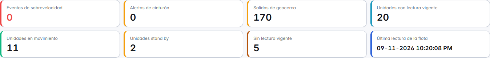
Tres tarjetas del período y cinco de estado en vivo.
14.1 Tarjetas del período (dependen de fechas y turno)
Tarjeta
Cómo se calcula
Eventos de sobrevelocidad
Tramos de exceso calculados más los eventos de tus alertas de exceso que caen fuera de esos tramos (sin contar dos veces). Un tramo de exceso es una racha de posiciones con velocidad estrictamente mayor que el límite. El límite en cada posición: dentro de geocercas tuyas con límite, manda la de menor área, y dentro de ella el límite por tipo y estado del vehículo, luego por tipo, luego el límite propio de la geocerca. Fuera de geocercas, el Límite manual; si está vacío, fuera de geocercas no se evalúa.
Alertas de cinturón
Solo unidades con sensor de cinturón. Cuenta rachas de 30 segundos o más con el cinturón suelto y velocidad de 1 km/h o más. Una racha que sigue abierta al cerrar el turno no cuenta. Sin sensor: «Sin sensor» y no suma.
Salidas de geocerca
Eventos de tus alertas de tipo «Geocerca de salida». Sin esa alerta configurada, siempre es 0.
14.2 Tarjetas en vivo (no dependen de fechas ni turno)
Respetan Flota y Dispositivo. Se basan en la última posición de cada unidad:
Estado
Regla (en este orden)
Sin lectura vigente
La última lectura es más antigua que la Vigencia (por defecto 10 min).
En movimiento
Velocidad de 1 km/h o más.
Stand by
Motor encendido.
Detenido / motor apagado
El resto.
«Unidades con lectura vigente» son todas menos las «Sin lectura vigente». «Última lectura de la flota» es la fecha de la lectura más reciente.
15. Tablas y gráficas
15.1 Estado actual · última lectura vigente por unidad
Vehículo, tipo, última lectura, velocidad GPS, motor, antigüedad en minutos y estado en vivo (reglas de 14.2). A su lado, la gráfica Estado de unidades con cuántas unidades hay en cada estado.
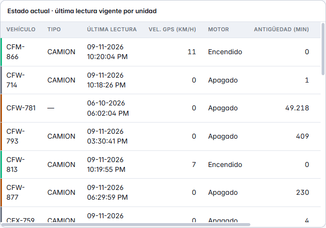
Estado actual por unidad.
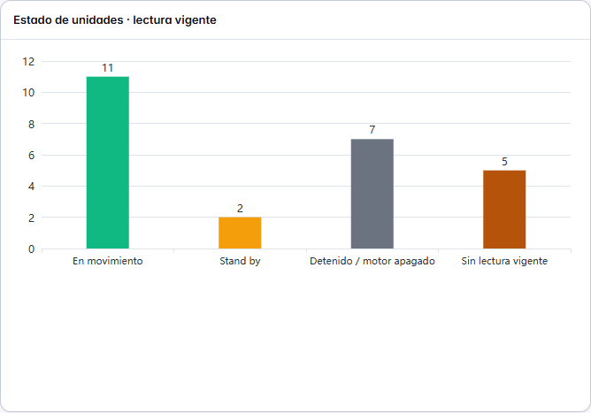
Estado de unidades · lectura vigente.
15.2 Resumen diario · flota filtrada
Una fila por día (con «Ambos», el día y la noche de esa fecha juntos):
Km: distancia entre todas las posiciones del día, también las de maniobras lentas.
Horas movimiento: tiempo con motor encendido y velocidad igual o mayor a la velocidad mínima de movimiento del vehículo (6 km/h por defecto), hasta que lleva más de «Parada mínima» sin moverse.
Vel. media: km ÷ horas en movimiento. Como los km incluyen maniobras, puede salir algo alta.
Vel. máx.: la mayor velocidad GPS de las posiciones.
Movimiento: unidades con algo de tiempo en movimiento ese día. Stand by*: unidades con horas de motor pero 0 horas de movimiento (no es el estado actual).
Excesos: eventos de sobrevelocidad del día.
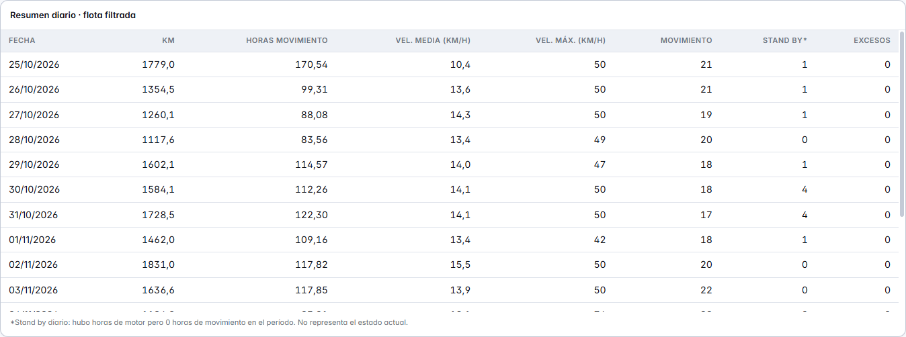
Resumen diario.
15.3 Gráficas del período
Unidades por estado diario: por cada día, cuántas unidades estuvieron en Movimiento, Stand by* y Sin actividad (estado diario, ver 15.4).
Velocidad media por unidad · período filtrado: km ÷ horas en movimiento de cada unidad en todo el período, de mayor a menor.
Eventos de sobrevelocidad por día.
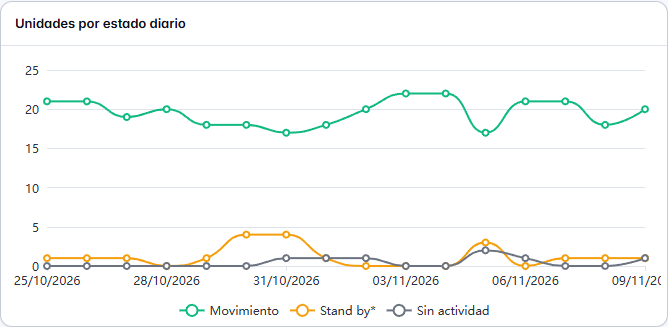
Unidades por estado diario.
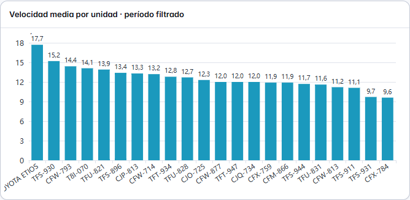
Velocidad media por unidad.
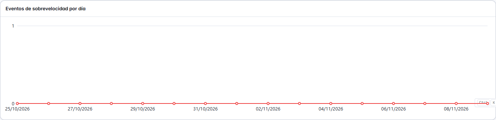
Eventos de sobrevelocidad por día.
15.4 Operaciones · resultado por unidad y Detalle diario por unidad
Resultado por unidad: km, horas de motor, horas en movimiento, paradas, registros (posiciones recibidas), excesos y velocidad media de todo el período.
Detalle diario por unidad: lo mismo por día, más velocidad máxima, cinturón y Estado diario: «Sin registro» (no hubo posiciones), «Movimiento» (hubo horas en movimiento), «Stand by*» (solo horas de motor) o «Sin actividad».
Horas de motor: diferencia del sensor de horas de motor si existe; si no, tiempo con motor encendido.
Paradas: número de veces que la unidad pasa a parada (más de «Parada mínima» sin moverse). Si al empezar el turno ya estaba parada, cuenta una.
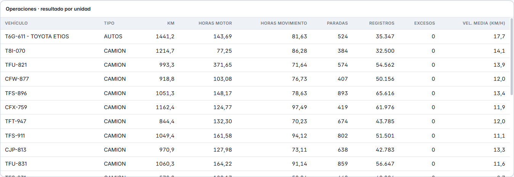
Operaciones · resultado por unidad.
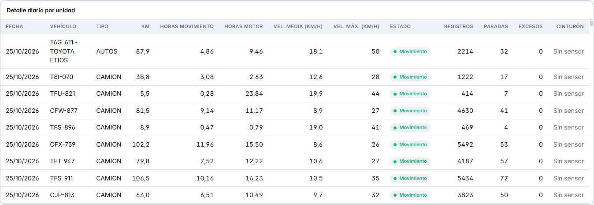
Detalle diario por unidad.
16. Ajustes, recálculo y exportación
16.1 Ajustes
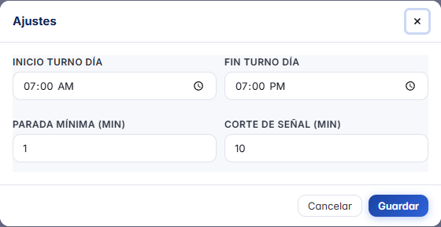
Botón Ajustes.
Ajuste
Por defecto
Afecta a
Inicio / Fin turno día
07:00 / 19:00
Los rangos de los turnos Día y Noche y, por tanto, todas las cifras diarias. El fin debe ser posterior al inicio.
Parada mínima (min)
1 (1 a 120)
Cuándo una unidad pasa a parada: horas en movimiento, paradas, estado diario y velocidad media.
Corte de señal (min)
10 (1 a 240)
Huecos de señal que cuentan como desconexión (columna del Excel).
Vigencia (min) (en la barra)
10 (1 a 1440)
Solo el estado en vivo: cuándo una unidad pasa a «Sin lectura vigente». No requiere recalcular.
Límite manual (km/h) (en la barra)
vacío
Excesos fuera de geocercas. Dentro de una geocerca manda su límite.
Al cambiar un ajuste que afecta al cálculo, la pantalla pregunta si quieres recalcular el período filtrado. Si no aceptas, los días ya calculados conservan las cifras anteriores.
16.2 Recalcular
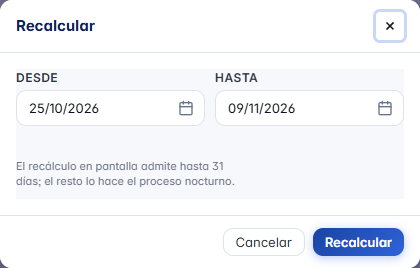
Recalcular: hasta 31 días por vez.
Rehace todas las unidades del usuario en el rango, aunque haya un filtro de flota o dispositivo. Se hace en el momento y puede tardar según unidades y días.
Rangos de más de 31 días: divídelos o deja que los haga el proceso automático.
«Datos calculados hasta» indica la hora del último cálculo, no la última fecha con datos.
16.3 Exportar a Excel
Hasta 93 días. Archivo Dashboard_Seguridad_AAAAMMDD_HHMM.xlsx con cuatro hojas:
Seguridad: filtros, tarjetas, estado actual, resumen diario, detalle diario por unidad y cuatro gráficos.
Operaciones: distancia, horas de motor, horas en movimiento, paradas y resultado por unidad.
Datos: una fila por unidad, fecha y turno con distancia, motor, movimiento, sobrevelocidad, cinturón, salidas de geocerca, paradas, desconexiones (eventos de corte de energía o fuera de línea más huecos de señal) y velocidad máxima.
Telemetría: última lectura de cada unidad.
17. Avisos y comportamientos no obvios
Vehículos sin tipo: aparecen con «—» y quedan fuera al filtrar por flota. Asígnales un tipo en su ficha.
Límite manual vacío: fuera de geocercas no se calculan excesos; solo suman los eventos de tus alertas de exceso.
Salidas de geocerca y excesos por alerta solo existen si tienes configuradas esas alertas.
Unidades compartidas: solo cuentan los eventos de tus propias alertas.
Ajustes hacia atrás: cambiar un ajuste no modifica lo ya calculado hasta que recalcules.
Días sin fila calculada no aparecen en las tablas.
Seguridad y Operaciones calculan «en movimiento» con la misma velocidad mínima del vehículo, pero Seguridad corta por «Parada mínima» y Operaciones por posición; por eso sus horas pueden diferir un poco.